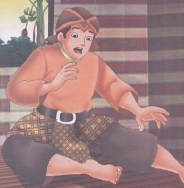
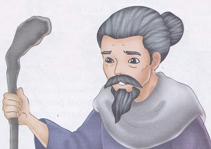
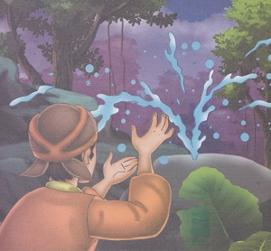
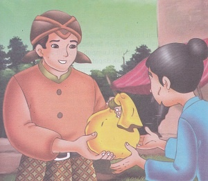

Asal Mula Batu Kuwung
( Cerita Rakyat Banten )
Dahulu, ada seorang Saudagar yang kaya raya. Saudagar ini perilakunya buruk. Ia sombong dan kikir. Karena budi pekertinya yang buruk penduduk desa sangat membencinya. Pada suatu hari, sang Saudagar kedatangan pengemis berkaki pincangmeminta makanan. Bukannya memberi, Saudagar itu malah menghardik dan mencaci maki. Si Pengemis didorong oleh saudagar hingga jatuh tersungkur. Mendapat perlakuan seperti itu, si Pengemis pun marah.
Keesokan harinya, ketika Saudagar bangun dari tidur, kedua kakinya susah digerakkan. Ia tak mampu bangkit dari kasurnya. Ia perintahkan kepada pengawalnya mencari tabib untuk mengobati penyakitnya. Namun, tak satu pun tabib yang berhasil mengobatinya. Saudagar itu pun berjanji bahwa ia akan memberikan setengah dari harta kekayaannya kepada siapa saja yang dapat menyembuhkan penyakitnya.
Mendengar hal itu, si Pengemis datang kembali menjelaskan apa yang menjadi penyebab lumpuhnya kaki Saudagar tersebut. “Musibah yang menimpa dirimu disebabkan oleh sifatmu yang sombong dan kikir. Ada beberapa syarat jika kau ingin sembuh.. Pertama, harus rendah hati dan pemurah. Kedua, pergilah bertapa diatas batu cekung selama tujuh hari tujuh malam. Ketiga, penuhi janjimu untuk membagi separuh kekayaanmu kepada orang miskin disekitar rumahmu”.
Dengan dibantu oleh pelayannya berangkatlah sang Saudagar untuk bertapa di atas batu cekung. Pada hari terakhir pertapaan, kejaiban terjadi. Dari pusat batu cekung menyembur sumber mata air panas. Saudagar itu menghentikan pertapaannya, ia mandi dengan sumber air panas tersebut. Sungguh aneh kedua kakinya yang lumpuh dapat digerakkan kembali. Setelah berendam agak lama, ia pun dapat berjalan dengan normal.
Setelah yakin sembuh pulih seperti sedia kala, saudagar itu kembali ke rumahnya. Ia memenuhi janjinya, membagi-bagikan separuh harta kepada orang-orang miskin disekitar tempat tinggalnya. Orang-orang yang dulu membencinya berbalik menyukainya. Perdagangannya semakin lancar, ia bertambah kaya raya. Penduduk setempat menyebut istilah cekung dengan Kuwung, maka Batu Cekung yang telah menjadi sebab kesembuhan si Saudagar disebut Batu Kuwung.